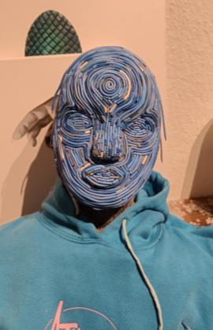
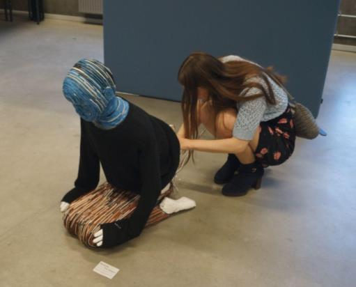

Beneath The Weight
An interactive kinetic sculpture visualizing the emotional weight of climate crisis information
Role: Concept Developer, Physical Fabricator, and Interactive Systems Designer
Context: 6th semester Bachelor project at Aalborg University
Timeframe: Spring 2024
Description: This interactive kinetic installation explores the physical and emotional fatigue of processing constant climate crisis news. Constructed from recycled materials, such as polystyrene and discarded cables, the sculpture takes the form of a 1:1 scale kneeling humanoid. It physically sinks under the weight of an escalating, generative soundscape of negative news broadcasts, and rises during calmer intervals. This movement tangibly visualizes eco-anxiety and information overload.

Solution and Conclusion
Conclusion: The physical movement is driven by a linear actuator, a PID motor controller, and an M5Stack microcontroller. This hardware synchronizes with a 3-minute layered soundscape that analyzes audio amplitude using Processing. Through walk-along interviews with visitors at AAU Create, the project proved that material-honest, dynamic sculptures can effectively bridge sensory experiences with critical public discourse on sustainability.
Visuals & Artifacts




Skills Applied in this Project
Exhibition History
Aalborg University CREATE, Spring 2024 For our first exhibition of the installation, I truly witnessed the audience's reaction firsthand. I saw an incredibly strong first impression, where the artwork's theme instantly became recognizable to the viewer, both mentally and physically. Several described it as uncomfortable to witness how human the sculpture felt as I watched it collapse under the weight of information. The artwork's endless repetition reinforced the feeling of powerlessness and mirrored the experience of the climate crisis as a problem that feels infinite.
Kulturmødet Mors, August 2024 At Kulturmødet, I had the opportunity to delve deeper into the societal debate and the reality that many experience. I learned how the sculpture became a tangible starting point for discussing collective overwhelm—not just as an individual feeling of powerlessness, but as a real societal challenge regarding how we can even process and navigate the constant stream of crisis information on top of our daily lives.
Sustainability Festival, Aalborg, October 2024 In connection with Aalborg2024: European Conference on Sustainable Cities and Towns, I exhibited the artwork in Kildeparken. Here, Beneath The Weight was shown alongside Prayer Mat by Sandro Masai, created in collaboration with Ghana Venskab and YEFL-Ghana. Together, the works focused on our material consumption and the narrative we often encounter: that we as individuals are expected to save the planet through small everyday actions. With the conference as a base, my artwork served as a call to action that the responsibility for a global crisis cannot be placed solely on the individual. The individual is weighed down by the pressure, and I believe the burden must instead be lifted together through strong communities, across national borders, and with political decisive action.